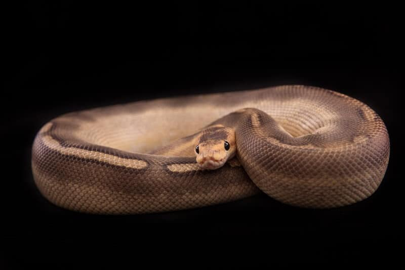
Champagne: Check out this gorgeous color morph! Champagne ball pythons do not have a visible pattern. If they do, it’s super faint and barely noticeable at all.Instead of a pattern, they feature a brown gradient. The gradient transitions to a smooth champagne color towards the belly.
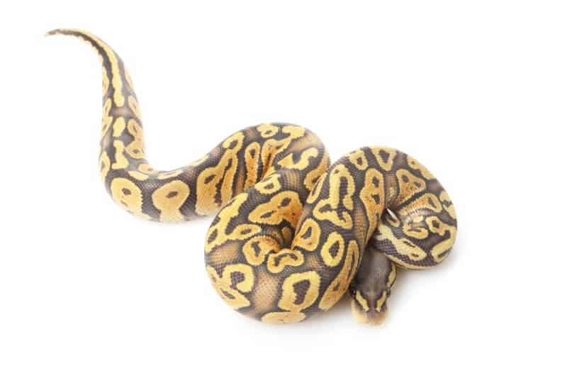
Ghost: Ghost ball python morphs are another variant that doesn’t look too different from standard snakes. But, they have a very important gene mutation. These snakes have reduced coloration.
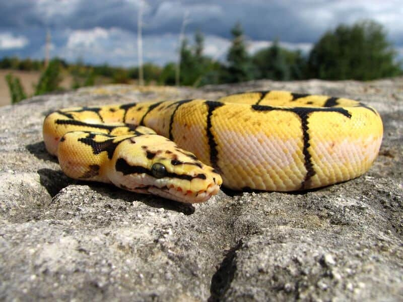
BumbleBee: Bumblebees are one of the coolest and most colorful ball python morphs. They were created by cross-breeding pastel and spider morphs. As a result, you have eye-catching colors and an intricate pattern.
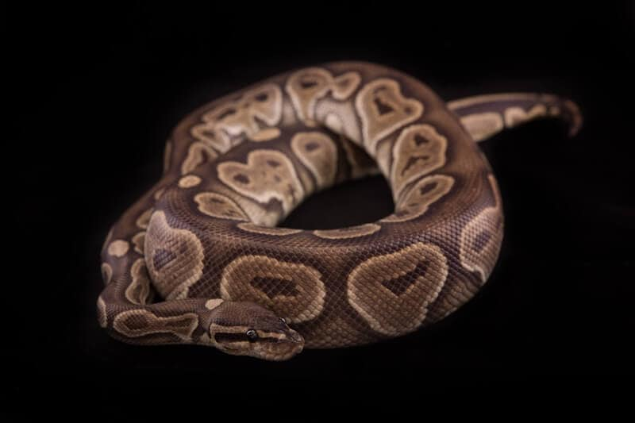
Cinnamon: If you see a cinnamon ball python at the pet store, you probably wouldn’t think much of it! They look pretty simple and have the same patterns as a common ball python. The only difference is a slightly darker base color.
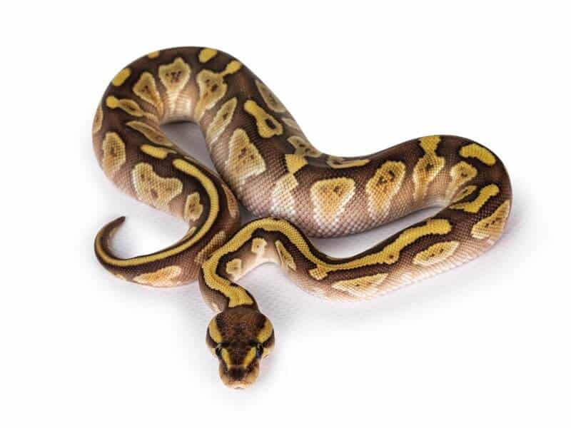
Lesser: When the lesser ball python first hit the market, it was selling for tens of thousands of dollars. Back then, it was the byproduct of innovation!
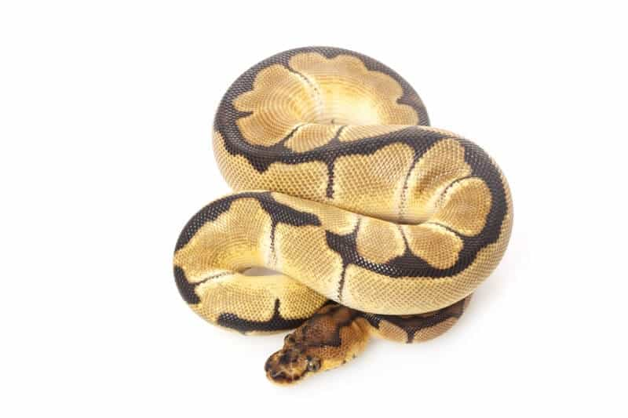
Clown: Discovered in 1999, clown ball pythons have a recessive mutation that affects both color and pattern. Most snakes have a base color of tan and brown. Coppery undertones help the color stand out.
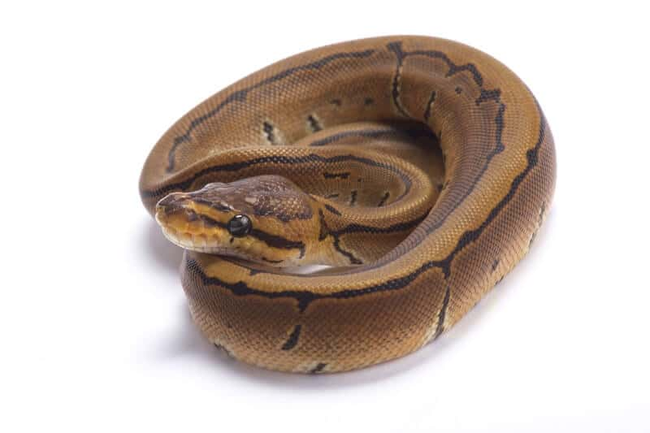
Pinstrip: Pinstripe ball pythons are relatively simple-looking when it comes to patterns. Most are devoid of distinct shapes. The only element that stands out is a thin stripe that runs along the spine.
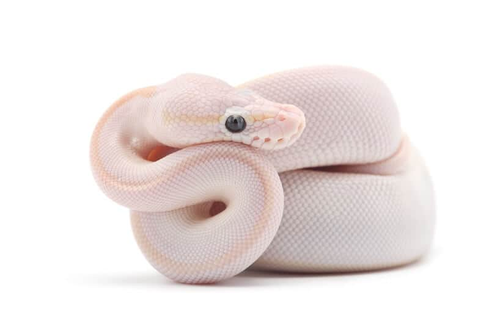
White: This one is pretty self-explanatory! White ball pythons are as white as the driven snow!
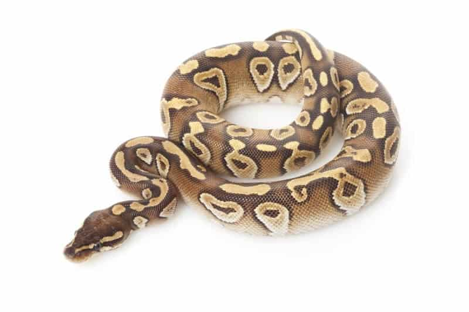
MojaveMojave ball pythons are easy to mistake as common types of ball pythons. However, there are a few key differences here.The first is the pattern itself. The patches contain a single keyhole marking. Plus, the edges are flamed to create a more natural appearance.
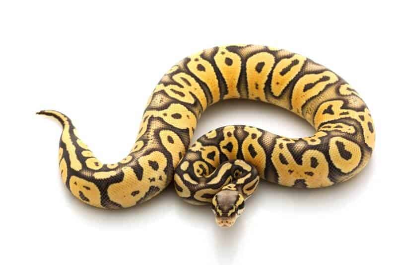
PastelPastel snakes are gorgeous and feature slightly subdued coloration. The standard dark brown patches are replaced with blushing brown. It’s much lighter and transitions to almost pure white at the belly.
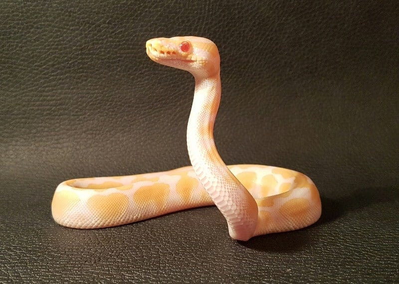
Albino: Also known as amelanistic, albino ball pythons are one of the most prevalent ball python morphs out there. The morph was first established sometime around 1992. The rest is history!
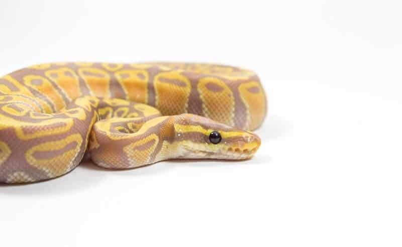
Coral Glow: Here’s a color morph that looks out-of-this-world beautiful. It’s a rare hypomelanistic color morph that some refer to as “white smoke.”The base color is dark lavender. It has low color saturation and sports random black flecks throughout.
All information and pictures gathered here: Ball Python morphs